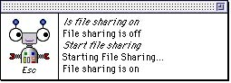
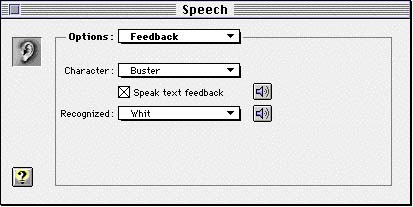
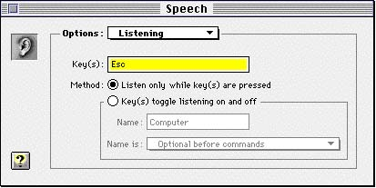

Feedback Services
The Speech Recognition Manager includes a set of feedback services that provide important cues and responses to the user. As you will see, it is very easy to obtain the default feedback behavior by setting thekSRFeedbackAndListeningModesproperty of your recognition system (see Listing 1-3 on page 1-17). The services consist of a floating feedback window that is normally visible when a recognizer is active and a set of functions that you can use to modify the operation of the feedback window. Because users typically have difficulty using speech recognition systems without some kind of audio or visual feedback, you should use these feedback services unless you have reasons to provide your own method of eliciting utterances from the user and providing responses to the user.A feedback window (shown in Figure 1-4) appears on the screen whenever a recognizer is active (unless the recognizer is configured to display no feedback window). The feedback window consists of two panes: a status pane on the left and a transcript pane on the right.
- IMPORTANT
- In general, you should use the Speech Recognition Manger's feedback services unless your application cannot. For example, under System 7.5, if your application doesn't call
WaitNextEventor is not high-level event aware, then it should not use the feedback services. By using these services, you are guaranteed to conform to the standard speech recognition interface. In addition, you will automatically benefit from future enhancements to the feedback services.
The status pane contains a feedback character (usually a head) whose expressions help indicate which state the recognizer is in. For instance, if the recognizer is awaiting an utterance, the eyes of the feedback character shown in Figure 1-4 will look straight at the user. The status pane also contains a listening mode indicator, a word or phrase that indicates which keyword must be uttered or which key must be held down in order for a recognizer to start listening. In Figure 1-4, the listening mode indicator is the word "Esc", which indicates that the user must hold down the Escape key while uttering a command. (This is the push-to-talk listening mode.)
- Note
- The appearance of the feedback window may change in future versions of the Speech Recognition Manager.
The transcript pane contains a readable transcript of the few most recent recognized utterances and feedback. There are two kinds of text in the transcript pane: recognized text and output text. Recognized text is text drawn into the transcript pane that represents a recognized utterance from the user. Output text is text drawn into the transcript pane that represents a response to a recognized utterance. For example, in Figure 1-4, the sentence "Is file sharing on" is recognized text, and the response "File sharing is off" is output text. Any application can request that a string be spoken or displayed in the feedback window.
The user can control several aspects of the feedback window using the Feedback option in the Speech control panel (shown in Figure 1-5). As you can see, a user can select the feedback character and the sound that is played whenever an utterance is recognized. The user can also determine whether any output text is to be read aloud to the user.
Figure 1-5 The Feedback option of the Speech control panel

The user can control the listening mode of a recognizer using the Listening option in the Speech control panel (shown in Figure 1-6).
Figure 1-6 The Listening option of the Speech control panel

Whether the feedback window appears when a recognizer is active and whether the recognizer uses the listening modes selected by the user in the Speech control panel depend on the feedback and listening modes of the recognition system associated with that recognizer. When you create a recognition system, you should explicitly set the desired feedback and listening modes. In general, you should set the feedback and listening modes to
kSRHasFeedbackHasListenModes, so that the user has the same speech input and feedback experience provided by other applications using speech recognition. See "Recognition System Properties" on page 1-37 for a complete description of the available feedback and listening modes.You can use Speech Recognition Manager functions to control certain aspects of the feedback window. For instance, you can draw output text in the feedback window, and you can have the feedback character speak text (complete with lip synchronization). See "Using the System Feedback Window" on page 1-78 for a description of these functions.
- Note
- To use the feedback services, your application must able to handle Apple events (as indicated by its
'SIZE'resource). Other code using the feedback services must be running in the layer of an application that is able to handle Apple events.